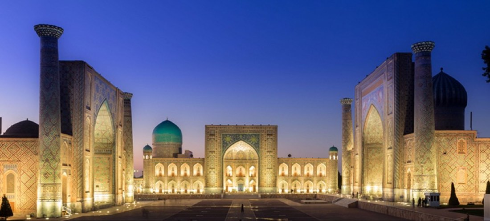
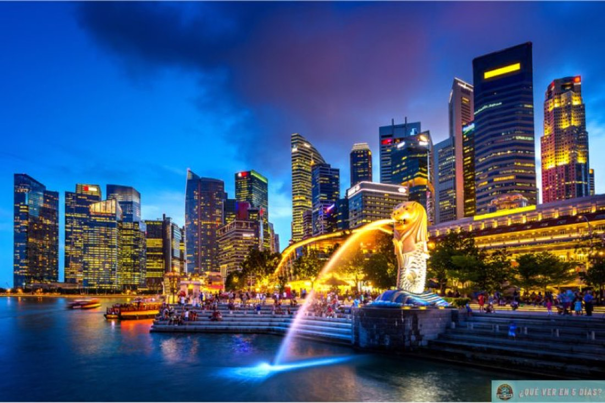
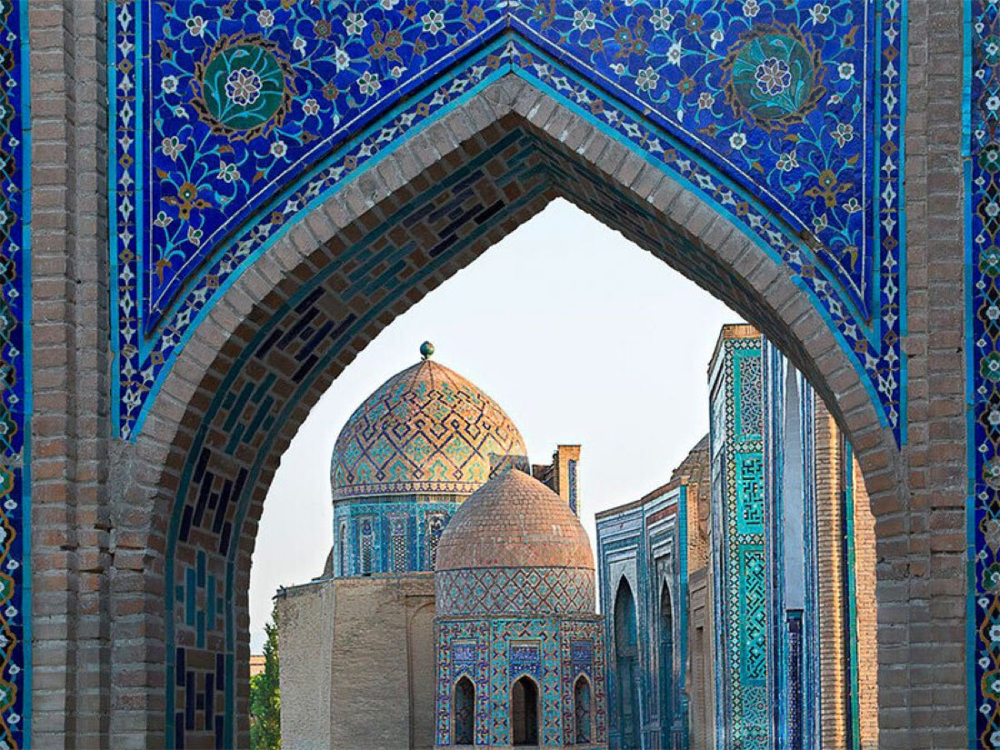

Orta ve Uzak AsyaGüncel
Orta ve Uzak AsyaGüncel
Tacikistan ve Özbekistan Turu
Orta ve Uzak Asya9 günVizeliGüncel
Tur bilgileri
- Tarih
- 27.10.2027 – 04.11.2027
- Süre
- 9 gün
- Güzergâh
- Duşanbe, Denau, Tirmiz, Kitob, Semerkand, Taşkent, Buhara, İstanbul
- Otel
- 1 Yıldız
- Vize
- Vizeli
- Ulaşım
- UÇAK, TREN
Rota haritası
Şehir etiketine dokunun; programın o günü açılsın.
Fiyatlar
Aşağıdaki fiyatlar önceki dönem içindir. Güncel fiyat, tarih ve kontenjan için bizi arayın.
| Tek Kişilik Odada Kişi Başı | $2.598,50 |
|---|---|
| İki Kişilik Odada Kişi Başı | $2.362,50 |
| Üç Kişilik Odada Kişi Başı | $2.362,50 |
| 0 - 2 Yaş | $315 |
|---|---|
| 2 - 6 Yaş | $2.257,50 |
| 6 - 12 Yaş | $2.310 |
* 12 yaş dahil değildir.
* 0 - 6 yaş çocuk fiyatları yataksızdır.
Tur programı
1.Gün
İstanbul Duşanbe
İstanbul Yeni Havalimanı Dış Hatlar Terminali Giden Yolcu Salonu "THY" Kontuarı’nda saat 15.20'de buluşuyoruz. Check-in ve pasaport işlemlerini müteakip THY’nin TK254 seferi ile 18.20’de Tacikistan’ın başkenti Duşanbe’ye uçuyoruz (4sa 40dk).
2.Gün
Duşanbe
Varış: 01.00. Gümrük ve pasaport işlemleri sonrası istirahat için özel aracımız ile otelimize hareket ediyoruz.Otelde alacağımız kahvaltının ardından Duşanbe şehir gezimizde Hz. Yakub-ı Çerhî (ks.) Türbesi, Rudaki Parkı, Simvol Meydanı, Bağımsızlık Meydanı, Milli Kütüphane, Millet Sarayı, Sancak Meydanı, Tacikistan Milli Müzesi, Yeşil Pazar ve Viktori Parkı göreceğimiz yerler arasındadır. Akşam yemeği sonrası konaklama otelimizde. The Rumi Hotel vb.
3.Gün
Duşanbe Denau Tirmiz
Otelde alacağımız kahvaltının ardından Özbekistan’a geçmek üzere Tursunzade Sınır Kapısı’na hareket ediyoruz (60km / 1sa). Tacikistan çıkış ve Özbekistan giriş gümrük ve pasaport işlemlerinin ardından Denau’ya hareket ediyoruz (40km / 1sa). Varışta Hz. Alâeddîn-i Attar (ks.) Türbesi ve Vahşivar dağlık bölgesinde (40 km / 1sa) Hz. Muhammed Zâhid (ks.) Türbesi ziyaretleri sonrası Tirmiz’e hareket ediyoruz (140km / 4sa). Varışta Hz. Hâkim et-Tirmizî Kabri ve Sünen-i Tirmizi hadis kitabının müellifi Hz. İmâm et-Tirmizî Kabri'ni ziyaret ediyoruz. Akşam yemeği sonrası konaklama otelimizde. Termez Palace Hotel vb.Önemli: Bölge şartları gereği fazla otel alternatifi olmadığından Tirmiz şehrindeki otel kalitesi diğer şehirlerden daha düşüktür.
4.Gün
Tirmiz Kitob Semerkand
Otelde alacağımız kahvaltının ardından Kitob'a hareket ediyoruz (300km / 6sa). Varışta Hz. Muhammed Derviş (ks.) ve Hz. Hâcegi-i Emkenegî (ks.) Türbeleri'ni ziyareti müteakip Semerkand’a hareket ediyoruz (150km / 3sa). Semerkand girişinde Hz. Ubeydullâh-ı Ahrâr (ks.) Türbesi'ni ziyaretin ardından akşam yemeği sonrası konaklama otelimizde. Konstantin Plaza Hotel vb.
5.Gün
Semerkand Buhara
Otelde alacağımız kahvaltının ardından Semerkand turumuzda Hz. İmam Buhari (ks.) Kabri ve Külliyesi, Uluğbey Rasathanesi, Şâh-ı Zinde (Sahabe Kusem bin Abbas) Türbesi, Hz. İmam Maturidi (ks.) Türbesi, Registan Meydanı’nda bulunan Uluğbey, Tilla Kari ve Şirdar Medreseleri'ni ziyaret sonrası akşam yemeğini müteakip saat saat 21.43’te Afrosiyob hızlı treni ile Buhara’ya hareket ediyoruz (1sa 31dk). Varış: 22.34. Konaklama otelimizde. Sahid Zarafshon Hotel vb.
6.Gün
Buhara
Otelde alacağımız kahvaltının ardından Buhara'dan 45 km uzaklıktaki Gücdüvan Kasabası'na hareket ediyoruz. Altın Silsile’den; Hz. Abdülhalık-ı Gücdüvani (ks), Arif-i Rivgeri (ks), Mahmud İncir-i Fağnevi (ks), Ali Ramiteni (ks), Muhammed Baba-es Semmasi (k.s) değişik mimaride inşa edilmiş türbelerini ziyaretin ardından Buhara'ya dönüyoruz. Hz. Emir Külal (ks), Hz. Şah-ı Nakşıbend Muhammed Bahaüddin (ks) ve Valideleri’nin Türbe ve Külliyeleri’nin ziyaretlerini müteakip akşam yemeği sonrası konaklama otelimizde.Not: Dileyen misafirlerimiz bugünü serbest zaman olarak değerlendirebilirler. Serbest zaman için otelde kalan misafirlerimiz akşam yemeği için restorana ulaşımlarını kendileri sağlayacaklardır.
7.Gün
Buhara Taşkent
Otelde alacağımız kahvaltının ardından Buhara eski şehir içerisindeki tarihi ve kültürel mekanlar gezimizde İsmail Samani Türbesi, Eyyüb Peygamber Çeşmesi ve Türbesi, Bolo Havuz Camisi, Ark Kalesi, Poyi Kalon Kompleksi, Kalan Minaresi, Mir Arap Medresesi, Lebi Havuz ve Çar-Minar Medresesi görülecek yerler arasındadır. Gezimizi müteakip serbest zamanın ardından Afrosiyob hızlı treni ile 16.17’de Taşkent’e hareket ediyoruz (4sa 14dk). Varış: 20.37 Akşam yemeği sonrası konaklama otelimizde. Al Anvar Hotel vb.
8.Gün
Taşkent
Otelde alacağımız kahvaltının ardından Taşkent gezimizde Hz. Osman dönemine ait Kuran-ı Kerim’in orijinal mushafı, Barak Han Medresesi, Kökeldaş Medresesi, Kaffal Şaşi Türbesi, Tilla Seyih Camisi, Emir Timur Han Meydanı, İstiklal Meydanı, Ali Şir Nevai Tiyatrosu Meydanı ve Çarşı Pazarı görülecek eserler arasındadır. Gezimizin ardından akşam yemeği sonrası dönüş yolculuğumuz için havalimanına hareket ediyoruz.
nemli: Uçak saatinden dolayı bu gece otel konaklaması yoktur.
9.Gün
Taşkent İstanbul
Taşkent Havalimanı’nda check-in ve pasaport işlemlerinin ardından THY’nin TK371 sefer sayılı uçuşu ile saat 03.35’te İstanbul’a uçuyoruz (5sa 15dk). Varış: 06.50.
Önemli:
Bu tur programı türbe ziyareti ağırlıklıdır. Güney Özbekistan'da yollar düzgün olmadığından kara yolculukları uzun ve yorucu olmaktadır.
Turumuzda şehirler arası geçişler hızlı trenlerle planlanmıştır. Ancak hızlı trenlerin satışa açılmaması, tükenmesi gibi durumlarda normal tren veya otobüs ile ulaşım sağlanacaktır. Katılımcıların bu durumları göz önünde bulundurarak tura katılmaları gerekmektedir.
Bir başka organizasyonda buluşmak üzere…
Fiyata dahil olanlar
- THY ile İstanbul / Duşanbe - Taşkent / İstanbul gidiş dönüş ekonomi sınıfı uçak bileti ve vergileri
- Hızlı Tren ile Semerkand / Buhara tek yön ekonomi sınıfı tren bileti ve vergileri
- Hızlı Tren ile Buhara / Taşkent tek yön ekonomi sınıfı tren bileti ve vergileri
- 7 gece konaklama
- Sabah kahvaltıları ve akşam yemekleri
- Duşanbe şehrinde Tacikistan Milli Müzesi giriş ücreti
- Tirmiz şehrinde Hz. İmâm et-Tirmizî Kabri giriş ücreti
- Semerkand şehrinde Şah-ı Zinde Türbesi
- Uluğbey Rasathanesi
- İmam Maturidi Türbesi
- Registan Meydanı
- Uluğbey
- Tilla Kari ve Şirdar Medreseleri ve Ubeydullâh-ı Ahrâr (ks.) Türbesi giriş ücretleri
- Buhara şehrinde İsmail Samani Türbesi
- Eyyüb Peygamber Çeşmesi ve Türbesi
- Poyi Kalon Kompleksi ve Hz. Şah-ı Nakşıbend Muhammed Bahaüddin Türbesi giriş ücretleri
- Taşkent şehrinde Moyi Mübarek Medresesi giriş ücreti
- Programda adı geçen tüm transferler
- Türkçe rehberlik hizmeti
- Seyahat sigortası
- Tüm yurt dışı yerel vergiler ve Türkiye KDV
Fiyata dahil olmayanlar
- Tacikistan vizesi ve hizmet bedeli: Kişi başı 120USD konsolosluğa ödenen ücret + (istenirse) 30USD vize danışmanlık ve randevu alımı hizmet bedeli
- Tacikistan ekspress vizesi ve hizmet bedeli: Kişi başı 240USD konsolosluğa ödenen ücret + (istenirse) 30USD vize danışmanlık ve randevu alımı hizmet bedeli
- Diğer şehirlerden İstanbul'a iç hat bağlantı uçuşu ücreti
- Öğle yemekleri ve tüm yemeklerde alınan kapalı su ve kapalı içeçekler
- Yurt dışı çıkış harcı
- Program dışı talep edilecek turlar
- Kişisel harcamalar
- otel ekstraları (oda servisleri
- telefon vb.) bahşiş
- Programda dahil olduğu açıkça belirtilmemiş her türlü hizmet
Benzer turlar
Orta ve Uzak AsyaGüncel
Orta ve Uzak AsyaGüncelMalezya & Singapur & Dubai Turu
Penang, Singapur, Melaka, Kuala Lumpur, Langkawi, Dubai
Güncel tarih ve fiyatiçin arayın
İncele →
Orta ve Uzak AsyaGüncel